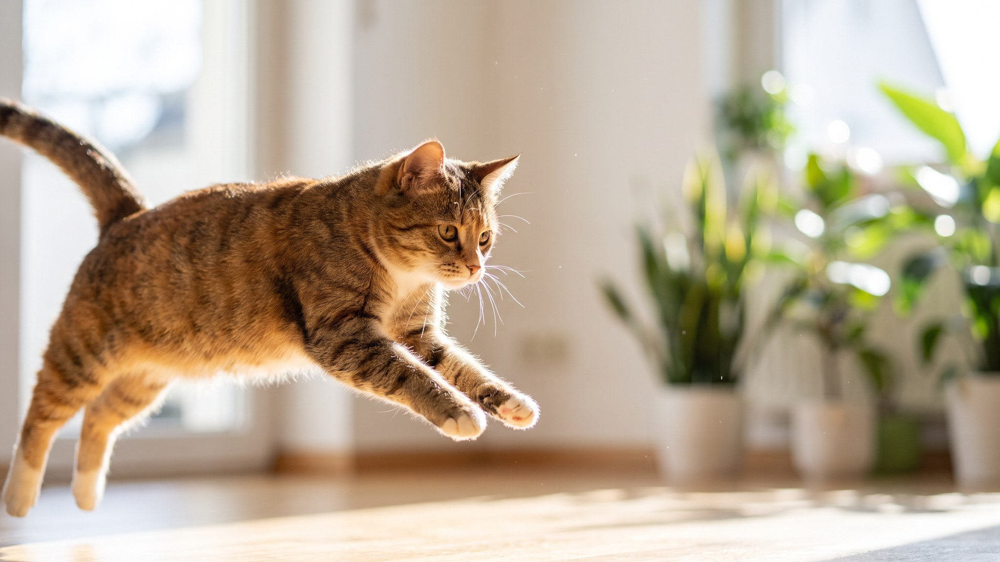

Кошки чистоплотны сами по себе, но их вещи нуждаются в уборке по расписанию. Грязная миска собирает бактерии и вызывает акне на подбородке. Редко убранный лоток кошка просто игнорирует и ищет другое место. Поилка с неменяной водой покрывается биоплёнкой быстрее, чем кажется. Вот конкретное расписание для каждого предмета.
🐾 Чтобы уход не держать в голове
AnimaLife напомнит, когда стричь когти, вычёсывать, купать и обрабатывать от паразитов, и заведёт дневник по вашему питомцу. Бесплатно.
Настроить напоминания → Настроить в MAX →
У вас iPhone? AnimaLife есть в App Store
Миска для еды. Каждый день. Влажный корм оставляет жировой налёт, в котором размножаются бактерии. Мойте после каждого кормления тёплой водой и средством без запаха или просто горячей водой. Пластиковые миски царапаются и удерживают бактерии в микротрещинах: металл или керамика надёжнее.
Поилка и вода. Воду меняйте каждый день. Поилку мойте раз в 1–2 дня: в стоячей воде быстро образуется биоплёнка, которая плохо смывается полосканием. Если у вас фонтанчик-поилка, промывайте его по инструкции производителя, обычно раз в неделю.
Лоток. Убирайте ежедневно: кошки отказываются ходить в переполненный лоток и ищут чистое место. Полную мойку с заменой наполнителя делайте раз в неделю. Мойте горячей водой без хлора и резких запахов: кошка чует химию лучше вас и может избегать лоток после уборки с агрессивным средством.
Лежанка. Стирайте раз в 1–2 недели. Шерсть, кожный жир и пыль накапливаются и создают среду для клещей. Используйте деликатный режим без кондиционера с резким запахом.
Когтеточка. Раз в месяц пылесосьте или выбивайте от шерсти и пыли. Мыть водой нет смысла: кошка помечает когтеточку своим запахом, и после стирки перестаёт ею пользоваться.
Переноска. После каждого использования протрите изнутри влажной тряпкой. Полная мойка нужна после длительных поездок или если кошка побывала у ветеринара.
Кошки очень чувствительны к запахам и некоторым химическим веществам. Правило простое: мойте то, из чего кошка ест и пьёт, горячей водой или мягким средством без запаха, сполосните тщательно. Хлорсодержащие средства, ароматизированные моющие и дезинфектанты с сильным запахом не годятся для мисок и лотка. Лоток можно дополнительно дезинфицировать раз в месяц разбавленным уксусом, потом хорошо смыть водой.
Если после того, как вы навели порядок в кошкином уголке, кошка всё равно избегает чистого лотка, это повод показать её ветеринару. Дело не в характере. Ещё один сигнал: чёрные точки или ранки на подбородке у кошки. Это может быть акне, связанное с бактериями из миски.
Материал носит информационный характер и не заменяет очную консультацию ветеринара.
🐾 Заведите дневник ухода за кошкой
Вес, шерсть, обработки, прививки — всё в одном месте. А если что-то смущает, AI-ветеринар ответит круглосуточно и бесплатно.
Завести дневник → Завести в MAX →
У вас iPhone? AnimaLife есть в App Store
🐾 Понравился разбор?
Подпишитесь на канал — каждый день разбираем по одному тревожному симптому у кошек и собак: что в пределах нормы, а когда пора к врачу. Подпишитесь, чтобы не пропустить разбор, который может спасти здоровье вашего питомца.